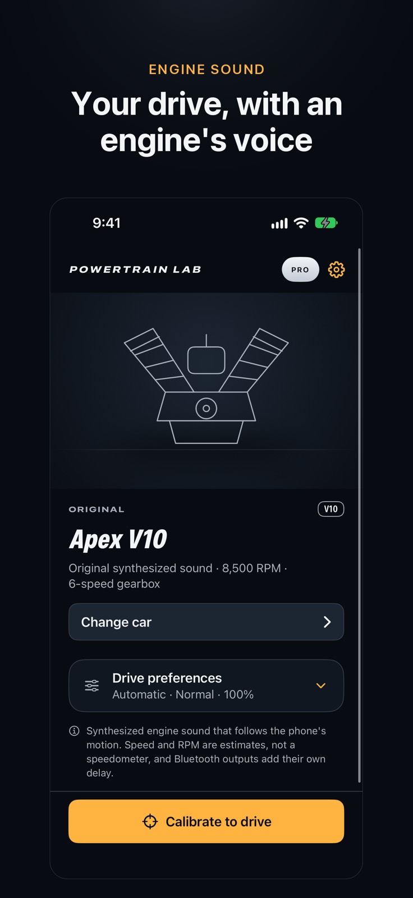
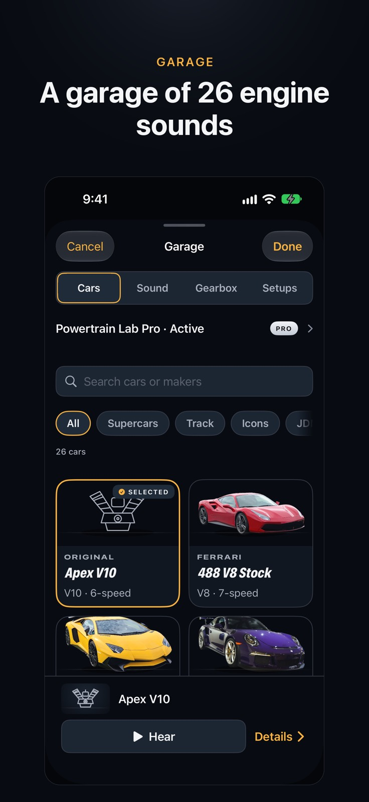
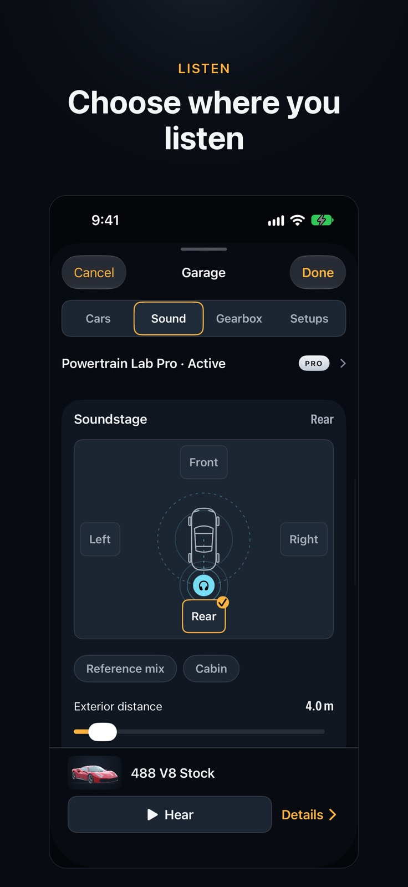
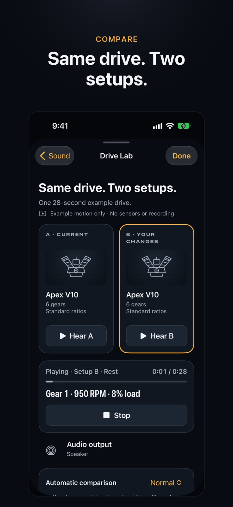

Free to download, with optional Pro subscriptions. iOS 17 or later; paired Apple Watch with watchOS 10 or later optional.
Hear revs, shifts and lift-off sound respond to your driving. Powertrain Lab uses calibrated iPhone motion to drive a simulated engine and gearbox. Hear every car while parked, then keep the sound and gearing you enjoy. No vehicle adapter or app account needed. It does not read pedals or control the car.
Set up and make changes while parked. The driver must not read or operate the phone or watch screen while moving. Use a secure mount and a volume that lets you hear your surroundings.
Your garage. Your soundstage.
Version 1.1.0 is a complete redesign. Your car leads the home screen, and a session shows big, simple instruments: simulated RPM and gear, plus an estimated speed when available. Tap Change car to open the Garage, with Cars, Sound, Gearbox and Setups. The gear at the top right opens Settings & help.
Explore 26 engine sounds: 24 recorded cars and two synthesized voices, Apex V10 and 1969 Muscle V8. In Sound, move your listening position to the front, rear or either side of a recorded car, adjust exterior distance, and blend in the cabin sound. Available lift-off and shift detail vary by car.




Same drive. Two setups.
Drive Lab lets you hear two setups over the same 28-second example drive, with live simulated RPM, gear and load. Every car can be auditioned without Pro.
- While parked, tap Change car and choose a different car, or change its sound or gearbox.
- In Sound, open Drive Lab. A is Current, your applied setup; B is Your changes, the choices you have not yet applied.
- Tap Hear A, then Hear B. Each audition starts the same example drive from the beginning. Choose Economy, Normal or Sport under Automatic comparison for both.
- Return to the Garage and tap Done to apply your choice, or Cancel to keep your original setup. Custom sound and custom gear ratios need Pro in a session.
Drive Lab uses example motion only, not sensors or a recording of your trip. Comparing a setup does not apply it.
Listen before choosing
Tap Change car before starting a session. Search or filter 26 engine sounds, from V8s and V12s to flat-sixes and a rotary, select a car and tap Hear. Every engine has a 30-second parked preview without Pro. Move the Throttle slider to rev, then tap Idle to let the virtual engine settle. The displayed RPM comes from the sound model; the preview does not read motion, sense your pedals or start a driving session. Leaving the screen or making the app inactive stops the preview. Previews and Drive Lab do not use the daily allowance.
Start a session
Set up before moving. The app estimates motion; it is not a speedometer, vehicle instrument or safety system.
- Park safely and mount your iPhone securely without blocking your view, airbags or vehicle controls. It does not need to point forward. Keep its position fixed throughout the drive.
- Choose your car audio or headphones with the audio output button, and set a comfortable phone volume and engine volume. Under Drive preferences, choose Automatic (Economy, Normal or Sport) or Manual. A passenger can operate Manual shifts. Optional location speed improves speed and direction estimates.
- Keep the car and phone still and tap Calibrate to drive. When Ready to start appears, tap Start engine before moving. 3D alignment continues as you drive.
- With usable Precise Location, drive normally. Without it, pull away forward and straight first so the phone can learn the car’s direction. Do not make unusual maneuvers to test the app.
- Tap Stop session while safely parked. Each new session needs a fresh parked calibration.
Setup guide and Apple Watch
The six-step setup guide covers mounting, audio, motion and location, choosing your sound, calibrating and finishing a drive. Replay it while parked from Settings & help or the Garage.
Tap Apple Watch in Settings & help for installation steps. For an App Store installation, open Apple’s Watch app on iPhone, then My Watch, find Powertrain Lab under Available Apps and tap Install. In TestFlight, open Powertrain Lab’s App Details on iPhone and install its Apple Watch app there. A paired watch running watchOS 10 or later is required; no separate watch purchase is needed.
The companion shows the simulated gear and offers large minus and plus buttons when the iPhone’s session is in Manual. Your iPhone’s engine access applies, including the shared daily allowance. Use it while parked or as a passenger, worn on the wrist; do not attach it to an airbag or steering-wheel controls. Disconnected or stale controls are disabled, and shifts are never queued for later. It never controls the vehicle.
Change engine without recalibrating
During a calibrated session, a passenger or parked user can tap Change engine. Calibration and motion estimates continue. Each engine keeps its own sound settings; custom sound settings and gearboxes need Pro. The driver must not operate the screen while moving. Full sound editing, previews and purchases are in the Garage after the session stops.
Free and Pro
Free includes five minutes total of engine-session sound each day, shared by all 26 cars. A short chime plays one minute before the time ends and a closing tone when it ends, so you never need to look. Sound then pauses; your car and calibration are kept. After you stop while parked, the home screen shows when your time returns. All transmission modes, 30-second parked previews and Drive Lab are included. No app account is needed.
Daily time is used only while session audio plays, including idle and neutral revs. At 0% engine volume or while sound is paused, it is not used; calibration, previews and Drive Lab do not use it either. The allowance renews at midnight UTC using an internet time check, not the iPhone’s date setting. Remaining time works offline; after reopening the app, a connection is needed to confirm a new day. If the check fails, parked previews, Drive Lab and verified Pro remain available.
Pro, monthly or yearly with the same benefits, has no daily limit and adds listening-position and sound controls in sessions, custom gear ratios with up to eight gears, and up to 12 named setups. Each car has its own virtual gearbox and shift map. Recorded voices use permitted third-party recordings, tuned for the app; they are independent interpretations, not exact factory recreations or manufacturer endorsements.
Without Pro, a Powertrain Lab Pro page can appear when you open the app: on the first open of each day and after today’s free time is used. Continue with Free works after five seconds. It never appears during a session. You can also open Pro from the home screen or Settings & help.
The Pro page shows Apple’s localized prices and billing periods before you subscribe. Choose a plan, then tap Subscribe. Payment is charged to your Apple Account, and the selected plan renews automatically unless cancelled at least 24 hours before renewal. Apple’s Standard Terms of Use apply.
Choose Free or Pro
- Hear the collection
- Free and Pro: 30-second parked previews of all 26 cars and Drive Lab comparisons.
- Use engine sound during a session
- Free: five minutes total each UTC day, shared by every car. Pro: no daily limit.
- Choose how to shift
- Free and Pro: Automatic or Manual, with Economy, Normal and Sport. Pro adds custom ratios with up to eight gears.
- Make it yours
- Pro: custom sound in sessions and up to 12 named setups. Saved setups remain viewable and exportable after Pro ends.
Restore, manage or cancel
Use Restore purchases on the Pro page or in Settings & help, under Subscription, with the Apple Account used for the subscription. A pending purchase unlocks after Apple confirms it. If plans or access cannot be checked, keep using Free, check your connection and try again. Support does not need your password.
Use Manage subscription in Settings & help, or Apple’s subscription settings, to view, change or cancel your plan. Turning off renewal keeps access for its remaining valid period. Deleting the app does not cancel a subscription.
Keep your setups
With Pro, save a name with your sound, character, gearbox, mode and volume choices in Setups. Up to 12 setups can be active; archive one to make room, then restore it when there is a free slot. Archived setups can be deleted. Each session still needs a fresh parked baseline. Separately, the app remembers what it learned about your mount, so the next drive with the same mount used the same way starts with that direction and checks it as you go.
If Pro ends, your saved setups remain available to view and export; using one follows the same daily allowance and Pro rules. Custom sound and custom gearboxes require Pro, and your saved choices are kept.
Export all setups writes your active and archived setups as a JSON file to a destination you choose. It includes no calibration, motion, location or purchase information, and stays available if Pro ends. There is no import or cloud-sync feature. Restoring purchases restores eligible Pro access, not deleted setups.
Engine level and music
Engine level ranges from 0% to 200%. Above 100% boosts the engine relative to other audio; protected peaks may sound compressed. It does not change the phone’s system volume or promise twice the perceived loudness. Start low and adjust while parked. Previews use the engine level selected in the Garage; changes apply to your next session when you tap Done.
Start music before starting the engine session to mix them. Optional Lower other audio while the engine plays asks iOS to play other apps quieter under the engine; a change applies the next time the engine starts. The app does not control other apps’ playback.
Image credits
The car photos are freely licensed Wikimedia Commons images. Each photo’s author, licence and source are listed in the app under Settings & help > About > Image credits.
Common questions
How does the sound follow my driving?
After a parked calibration, iPhone motion and optional location speed feed a simulated engine and gearbox. Revs and shifts respond to the estimated motion. Powertrain Lab does not connect to the vehicle’s pedals, engine computer or controls.
Do I need a vehicle adapter?
No OBD adapter or account is required. Secure the iPhone in a stable mount, choose your audio output and calibrate before moving. Keep the phone fixed throughout the session.
Can I try the sounds without driving?
Yes. Every car has a free 30-second parked preview. Drive Lab also compares two setups over the same example drive. Neither starts a driving session or uses your daily time.
My free time ran out. What happens now?
Engine sound pauses and your car and calibration are kept. When parked, tap Stop session; the home screen shows when your free time returns and offers Get Pro instead of Calibrate to drive until then. Parked previews and Drive Lab still work.
I paid, but Pro has not appeared. What should I do?
Open the Pro page and check the displayed purchase status. A pending purchase needs Apple’s approval; it is not a completed subscription. If you already have an active subscription, use Restore purchases with the same Apple Account. You do not need to purchase again. If access still cannot be verified, contact support with the app version and the displayed message. Do not send passwords, card information or raw receipts.
Why did my previewed engine not change my drive?
Hearing a preview or a Drive Lab comparison does not apply settings. Return to the Garage and tap Done. If a choice needs Pro, the app explains this before applying it. Cancel keeps your previous setup.
Why won’t calibration finish?
The phone and vehicle must stay still. Follow the status message and check permissions in iPhone Settings. A physical iPhone with motion sensors is required for live calibration; parked previews do not need it.
Why did sound pause?
An interruption, output change, stale motion, a changed mount or the end of today’s free time can pause sound. Wait until safely parked, check the route and volume, and follow the status message. Use Start engine when available, or stop and recalibrate if asked. If sound pauses while the app is in the background, the session waits up to a minute for motion updates, up to a minute for a disconnected audio output (only with location speed on) and up to 15 minutes for a phone call, then stops by itself. Stop session cancels this recovery. Do not adjust the mount or troubleshoot while moving.
Why is speed approximate or hidden?
Speed is an estimate, not vehicle data. Without usable location it can drift or be hidden, and corners respond more cautiously. Quiet motion cannot distinguish a stopped vehicle from steady travel. Do not use the app for navigation, speed-limit compliance or other driving decisions.
Can I use a car speaker or lock the screen?
Select an output while parked. Delay depends on your phone and sound system; Bluetooth adds its own delay. The screen stays on during a session so the phone does not auto-lock while mounted. An active audible session with location speed can continue with the screen locked, but locking during calibration or a motion-only session ends that setup.
Contact support
Email mwsupplylimited@gmail.com, or use Email support in Settings & help. Include the app version (shown at the bottom of Settings & help), iPhone model, iOS version, audio output and what happened. A screenshot taken while safely parked can help. Share only relevant details; do not send passwords, payment-card information or precise routes.
Read the privacy policy for permissions, Apple purchase handling, local data and support correspondence. Terms of Use (Apple Standard EULA).